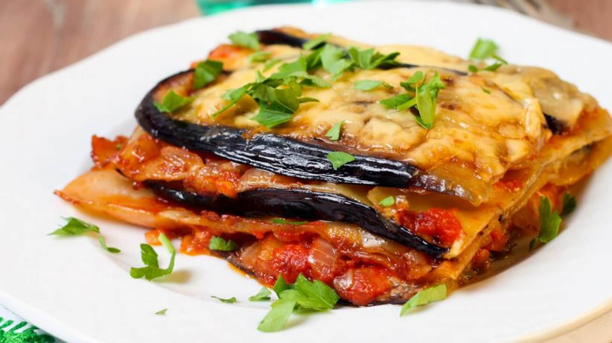

Lasanha de beringela
ingredientes:
2 berinjelas médias descascadas e cortadas em fatias finas no sentido do comprimento
1 cebola picada
2 dentes de alho amassados
2 lata de molho de tomate pronto
200 g de presunto
200 g de mussarela
sal e pimenta a gosto
2 colheres (sopa) de óleo
Modo de preparo:
Em uma panela, coloque o óleo e doure a cebola com o alho.
Acrescente as 2 latas de molho e tempere a gosto com sal e pimenta.
Quando o molho levantar fervura, adicione as fatias de berinjela aos pouco para que cozinhem levemente.
Em seguida, alterne em uma forma as fatias de berinjela, o molho, o presunto e a mussarela.
Repita o procedimento e finalize com queijo e molho.
Leve ao forno preaquecido a 200º C por 25 minutos..
Pronto, agora é só se servir.

Lasanha de Beringela